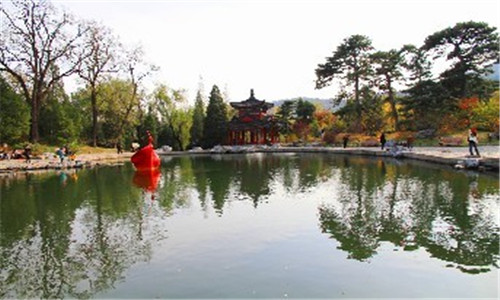
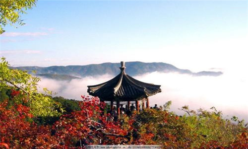
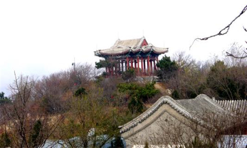
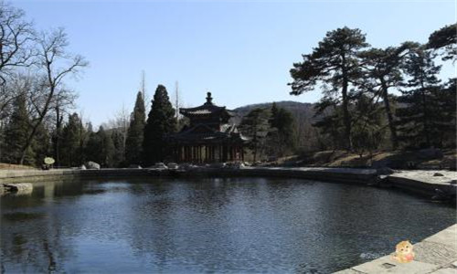
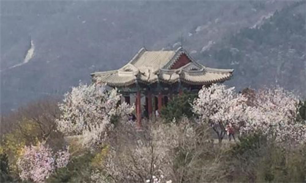
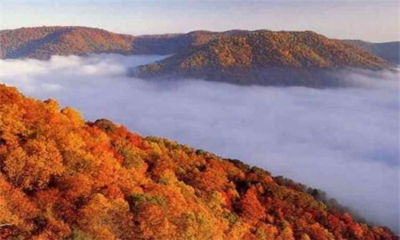
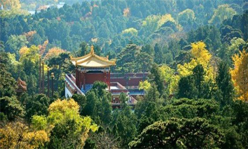
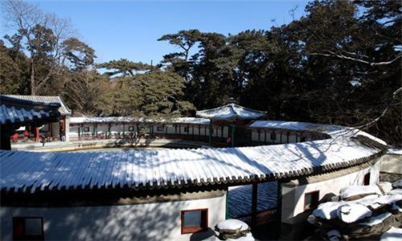

morly旅游网
香山公园位于北京西北郊小西山山脉东麓，距城20公里，占地160公顷，是一座著名的具有皇家园林特色的大型山林公园。香山公园始建于金大定二十六年（1186年），距今已有800多年历史。1956年开辟为人民公园，经过近半个世纪的建设，现已成为中外闻名的北京十大公园之一。
香山公园文物古迹丰富珍贵，亭台楼阁似星辰散布山林之间。这里有燕京八景之一“西山晴雪”； 这里有集明清两代建筑风格的寺院“碧云寺”；这里有国内仅存的木质贴金“五百罗汉堂”；这里有迎接六世班禅的行宫“宗镜大昭之庙”；这里有颇具江南特色的古雅庭院“见心斋”；这里有世纪伟人毛泽东和中共中央进驻北平最早居住和办公的地方,双清别墅；这里有世纪伟人孙中山先生灵柩暂厝地--碧云寺金刚宝座塔。 香山公园地势崛峻，峰峦叠翠，泉沛林茂。主峰香炉峰（俗称鬼见愁）海拔557米。公园内人与自然和谐相处，鸟啼虫鸣，松鼠嬉闹于沟壑林间。这里春日繁花似锦、夏时凉爽宜人、冬来银妆素裹。尤其是深秋时节，10万株黄栌如火如荼，气势磅礴，曾被评为“北京新十六景”之一。
香山公园旅游服务设施齐全。游，可乘大型吊椅式游览索道（全长1400米，落差431米），西山美景、北京城廓尽收眼底。吃，松林餐厅环境优美，昆虫野菜、泉水煮饭，别具风味。住,香山别墅功能齐全,是观光旅游、洽谈会议、度假休闲的理想场所。住在这里，悠闲散步即可到达中国科学院植物园、北京植物园、卧佛寺。
 香山得名
主要说法有二：
一是得名自最高峰的钟乳石，其形似香炉，称为香炉山，简称香山。
二是得名自古时香山的杏花，花开时其香味使得此山成为名副其实的“香山”。
重阳阁
香炉峰顶的一组建筑，意在九九重阳登高瞩望京城。建于1983年4月，分为上、下两层。
孙中山纪念堂
这座殿堂原为普明妙觉殿。1925年3月12日，孙中山先生在北京逝世，他的灵柩曾停放在碧云寺最高处的金刚宝座塔内，四年之后，中山先生的灵柩前往南京紫金山时，曾在此殿设灵堂，举行了隆重的公祭和哀悼，之后，这里辟为“孙中山纪念堂”，供人们瞻仰。悬挂在门楣上的匾额是由宋庆龄亲笔所书的“孙中山纪念堂”六个大字。
知松园
位于南北主要游览干道西侧。占地2公顷，是1987年新辟建的景区。景区内一、二级古松柏100余株。在景区之东立宽1.5米，长2.5米，高5.5米巨石一块，正面书直径为0.8米的“知松园”三字，石背录陈毅诗“大雪压青松，青松挺且直，欲知松高节，待到雪化时”。知松取意于《论语·子罕》“岁寒然后知松柏之后凋也”。景区内有古松同琉璃塔形成借景，命名为“琼松塔影”。
 璎珞岩
位于静翠湖南面。始建于明代，是一处人工叠成的石山，有泉水流下，俗称"小瀑布"，淙淙水声，悦耳动听，上边建有小亭匾书"清音"，再后敞厅匾书康熙题名"绿筠深处"。《日下旧闻考》称这里："亭之胜以耳受，岩之胜以目谋，澡濯神明，斯为最矣"。
眼镜湖
为中华民国时建。由两水池构成，形如眼镜，故名。湖北侧依山叠石砌成石洞，引卓锡之水形成水帘洞景区。湖东南有"佳日亭"一座，建于1992年，为十字重檐，苏式彩画。
梦感泉
相传金章宗宿香山行宫，梦见泉水涌出，天明命人掘地，果得一泉，取名梦感泉。后来寺僧想将泉扩大，结果反而枯竭。
森玉笏
从阆风亭向西直上，可见一巨大的悬崖峭壁。乾隆皇帝看它像朝臣手中的笏版，故赐此名。森玉笏三个大字刻在石壁上。附近有许多颂扬的题字和诗句。
 阆风亭
路旁一亭，亭旁一块剑石，上刻“阆风”二字。站在亭上眺望西山，令人心旷神怡。
香山寺
该寺遗址即金大定二十六年(1186)所建之大永安寺，原为金代行宫。据记载原有五层大殿，前有石坊、山门、钟鼓楼、城垣、红墙碧瓦掩映在苍松翠柏之中，为香山二十八景之一。经英法联军和八国联军二次浩劫之后，只剩下正殿前的石屏。石碑和石台阶等为数不多的几件不怕火燹的石头制品了。石屏本身有较高的艺术价值，正面中间是《金刚经》，左为《心经》，右为《观音经》，背面是燃灯、观音、普贤像。山门内有汉、满、蒙、藏四种文字的石碑，内容是乾隆书的《娑罗树歌》。娑罗树，被视为佛门圣树， 是一种具有特殊意义的植物，乔木，叶如手掌，为掌状复叶，多为七瓣，每年五六月间开花，花为宝塔状圆锥花序。据佛经记载，佛教创始人释迦牟尼涅磐于娑罗树下，乾隆皇帝亲自撰写“娑罗树歌”，也蕴藏深意。
山门外有几处著名古迹：听法松：寺门两侧，有二株遒劲挺拔，枝叶繁茂的古松，状如听法，故名。金鸡叫：在听法松下甬路中心的方砖上跺几脚，可听到铮铮之声，犹如金鸡啼鸣。知乐濠：山门前石桥下有方池，上有汉白玉雕栏，池南侧有龙头，泉水流出，名知乐濠。来青轩：该轩建在依崖叠石之上，登轩四望，青翠万状，故名来青。明万历二十八年(1596)，万历皇帝祭陵归来，见此轩之匾额后，嫌小，遂书径尺“来青轩”三个大字。寺内还有护驾松、丹井等古迹。
 内容整理至网络，如有侵权，请联系我们！1255394075@qq.com